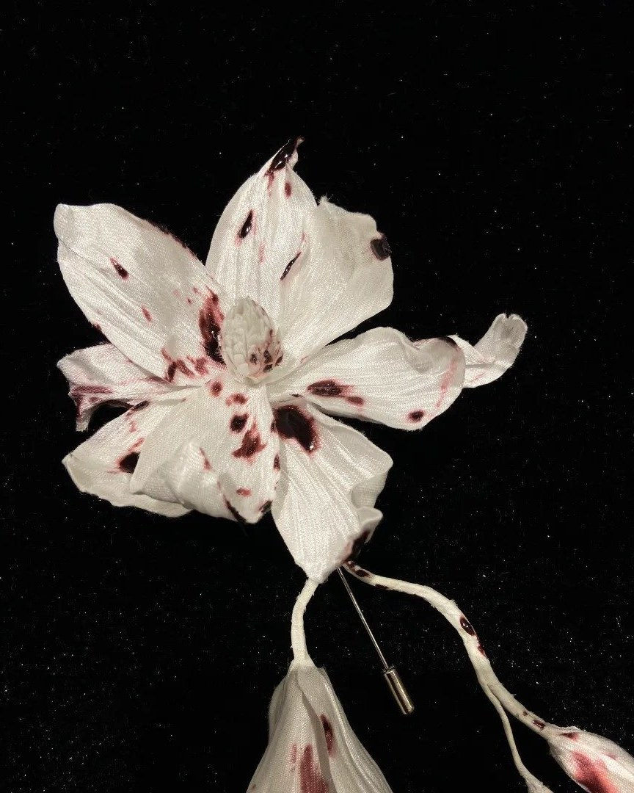
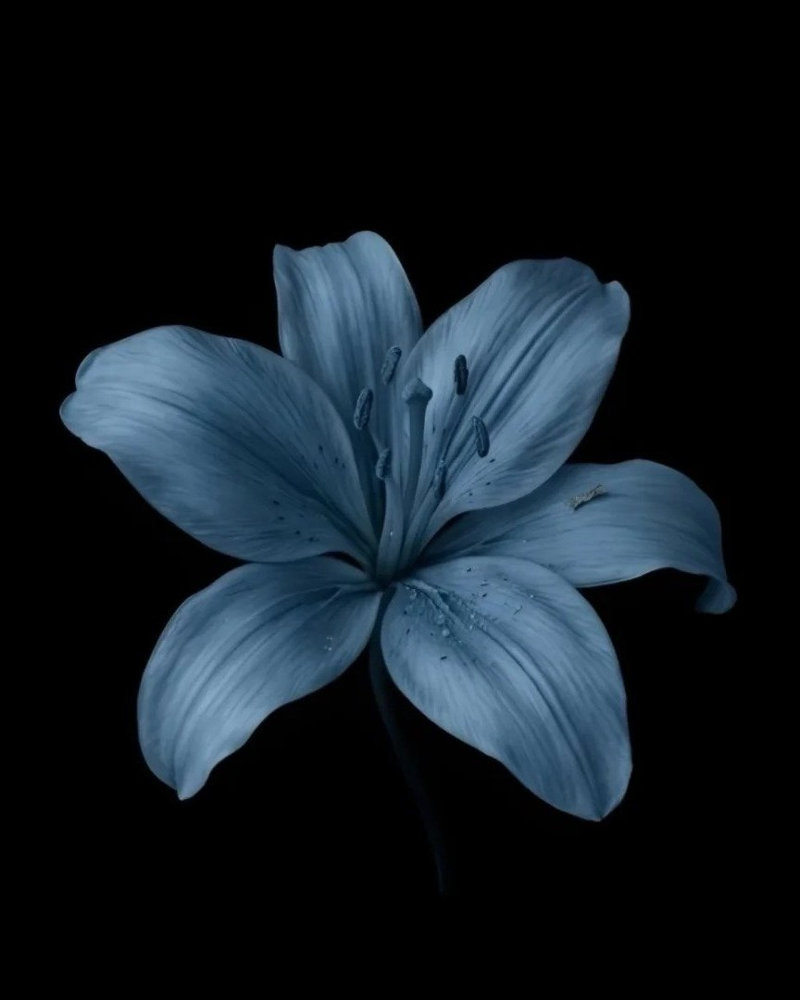
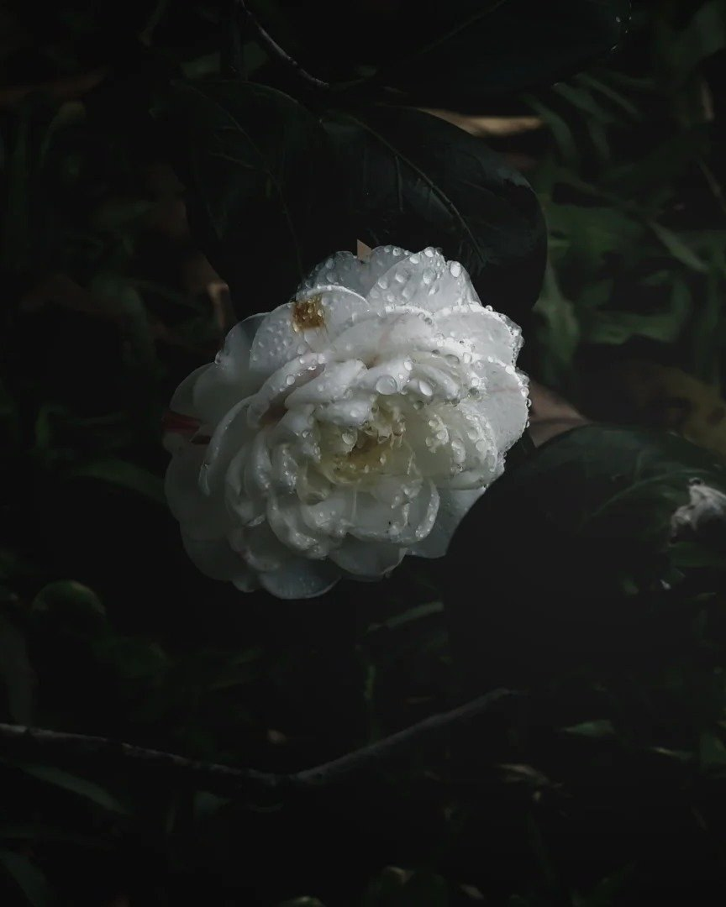

Rare · 6 places leftAn atelier of pressed botanicals, kept between glass and paper since 1974.
Season 2026 · 花見 Flower viewing
Private gardens, rare cultivars and slow mornings among petals. Petalwings arranges flower-viewing journeys across the four seasons — no crowds, no hurry, just the bloom.
01 — Popular destinations
Each collection is a single slow day: a private garden, a botanist who knows its stories, and a table set among the flowers.
View all collections
Rare · 6 places leftAn atelier of pressed botanicals, kept between glass and paper since 1974.

Seasonal · 4 places leftA single impossible lily, lit for ninety minutes after sunset. No filters, no flash.

SignatureRain, dark leaves, and white camellias the size of a palm. Umbrellas provided.
02 — The experience
Flower viewing is not a checklist. We build the day around light, weather and the pace of the garden — then step back and let it happen.
Gates open an hour before the public, while the dew is still on the petals.
Small groups of six. Someone who can name the cultivar and the century it arrived.
Lunch set under the trees, cooked with what grows in the same garden.

03 — How it works
Three quiet steps between you and the garden. Everything else — permits, transport, the table — is arranged.
Browse by season, flower or mood. Each collection lists exactly what will be open when you arrive.
Pick a date and we hold a private slot. Groups stay small, so the garden stays quiet.
Meet at first light, walk slowly, and leave with a pressed specimen from the day.
04 — The archive
A field journal of what bloomed, where, and at what hour. Drag the strip, or open a frame to look closer.


Drag to explore · click to enlarge
05 — The invitation
The autumn camellia edition is open: three gardens, two botanists, one very slow weekend.
Next departures 24 Oct · 07 Nov · 05 Dec
06 — Stay in bloom
Openings, field notes and a few photographs we could not keep to ourselves. Written slowly, sent rarely.